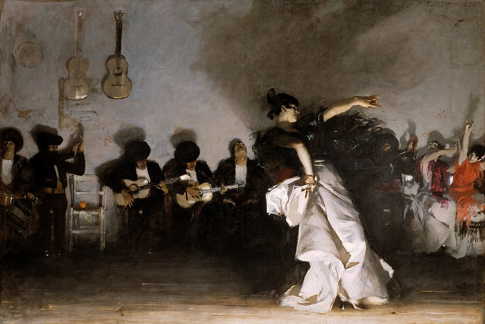

<head>
<meta charset="UTF-8" />
<meta name="keywords" content="drawing, painting" />
<meta name="description" content="drawings by Sunjy" />
<title>Sunjy</title>
<link rel="shortcut icon" type="image/x-icon" href="../../mImages/mCommon/favicon.ico" media="screen" />
<link rel="stylesheet" type="text/css" href="../../mCsses/mCommon/mCssA.css" />
<link rel="stylesheet" type="text/css" href="../../mCsses/mCommon/mCssB.css" />
<link rel="stylesheet" type="text/css" href="../../mCsses/mCommon/mCssC.css" />
<link rel="stylesheet" type="text/css" href="../../mCsses/mCommon/mCssD.css" />
<link rel="stylesheet" type="text/css" href="../../mCsses/mContent/mCssA.css" />
<link rel="stylesheet" type="text/css" href="../../mCsses/mContent/mCssB.css" />
<link rel="stylesheet" type="text/css" href="../../mCsses/mContent/mCssC.css" />
<link rel="stylesheet" type="text/css" href="../../mCsses/mContent/mCssD.css" />
</head>
<script type="text/javascript" src="../../mScripts/mContent/mContentAA.js" /></script>
<script type="text/javascript" src="../../mScripts/mContent/mContentAB.js" /></script>
<script type="text/javascript" src="../../mScripts/mContent/mContentAC.js" /></script>
<script type="text/javascript" src="../../mScripts/mContent/mContentAD.js" /></script>
<script type="text/javascript"></script> 
<script type="text/javascript">
document.write('<div class="mImgAbsolute"></div>');
/*
document.write('<p class="mFontSizeBColor" />From a white paper...</p>');
document.write('<table class="center"><tr><td>');
document.write('');
document.write('</td></tr></table>');
*/
</script>


<script type="text/javascript">
document.write('<p class="mFontSizeBColor" />El Jaleo</p>');
document.write('<p class="mFontSizeSColor" />“El Jaleo” by John Singer Sargent is a 12 feet (3.7 m) broad canvas depicting a Spanish Gypsy dancer performing to the accompaniment of musicians.<br><br>Sargent’s restrained coloring dramatizes the contrast between the dark background and the shining white skirt of the dancer.<br><br>The dress is painted to suggest movement, and the lighting creates shadows on the rear wall that capture the progress of the dancer.<br><br>The title of the painting, El Jaleo, refers to both the meaning of jaleo, a ruckus, as well as the specific dance known as jaleo de Jerez.<br><br>The dancer is wearing a large, embroidered shawl wrapped around her shoulders with the outstretched arm.<br><br>The dancer is depicted in the flamenco dance technique and style. Space and lighting communicate the energetic rhythms of the dance, its sound, and movement. <br><br>The painting is an example of John Singer Sargent’s Impressionism, and an example of Hispanism, the phenomenon of fascination with Spanish culture in the nineteenth and early twentieth century.<br><br>Sargent made Aatrip through Spain, and North Africa in 1879 inspired the painting. The painting is related to a series of works Sargent painted during a subsequent stay in Venice.<br><br>The painting was preceded by a series of preliminary studies, focusing mainly on the dancer’s stylized posture.<br><br>In 1914,  El Jaleo was exhibited at the Isabella Stewart Gardner Museum, in a uniquely constructed Spanish Cloister gallery framed by a Moorish arch.<br><br>Sargent was so impressed he also presented Isabella Stewart Gardner with an album of drawings he had made as preparatory sketches for the work.<br><br>Flamenco<br><br>Flamenco is an art form based on the various folkloric music traditions of Andalusia in southern Spain. Flamenco has been influenced by and associated with the Romani people in Spain; however, its origin and style are uniquely Andalusian.<br><br>Flamenco developed through the cross-cultural interchange between Andalusians, Romani, Castilians, Moors, and Sephardi Jews during the Moorish occupation.<br><br>Flamenco Dance<br><br>The Flamenco Dance is known for its emotional intensity, proud carriage, expressive use of the arms, and rhythmic stamping of the feet.<br><br>The dance is often performed solo, and is based on signals of structural improvisation rather than choreographed.<br><br>Traditional flamenco is danced mainly in a proud and upright style. For women, the back is often held in a marked backbend.<br><br>There is little movement of the hips, the body is tightly held, and the arms are extended, like a ballet dancer.<br><br>In the twentieth century, flamenco danced informally at Roma celebrations in Spain was considered the most “authentic” form of flamenco.<br><br>The arms are noticeably different from classical flamenco, curving around the head and body rather than extending, often with a bent elbow.<br></p>');
document.write('<table class="center" /><tr><td>');
document.write('<br>Sargent’s restrained coloring dramatizes the contrast between the dark background and the shining white skirt of the dancer.<br><br>The dress is painted to suggest movement, and the lighting creates shadows on the rear wall that capture the progress of the dancer.<br><br>The title of the painting, El Jaleo, refers to both the meaning of jaleo, a ruckus, as well as the specific dance known as jaleo de Jerez.<br><br>The dancer is wearing a large, embroidered shawl wrapped around her shoulders with the outstretched arm.<br><br>The dancer is depicted in the flamenco dance technique and style. Space and lighting communicate the energetic rhythms of the dance, its sound, and movement. <br><br>The painting is an example of John Singer Sargent’s Impressionism, and an example of Hispanism, the phenomenon of fascination with Spanish culture in the nineteenth and early twentieth century.<br><br>Sargent made Aatrip through Spain, and North Africa in 1879 inspired the painting. The painting is related to a series of works Sargent painted during a subsequent stay in Venice.<br><br>The painting was preceded by a series of preliminary studies, focusing mainly on the dancer’s stylized posture.<br><br>In 1914,  El Jaleo was exhibited at the Isabella Stewart Gardner Museum, in a uniquely constructed Spanish Cloister gallery framed by a Moorish arch.<br><br>Sargent was so impressed he also presented Isabella Stewart Gardner with an album of drawings he had made as preparatory sketches for the work.<br><br>Flamenco<br><br>Flamenco is an art form based on the various folkloric music traditions of Andalusia in southern Spain. Flamenco has been influenced by and associated with the Romani people in Spain; however, its origin and style are uniquely Andalusian.<br><br>Flamenco developed through the cross-cultural interchange between Andalusians, Romani, Castilians, Moors, and Sephardi Jews during the Moorish occupation.<br><br>Flamenco Dance<br><br>The Flamenco Dance is known for its emotional intensity, proud carriage, expressive use of the arms, and rhythmic stamping of the feet.<br><br>The dance is often performed solo, and is based on signals of structural improvisation rather than choreographed.<br><br>Traditional flamenco is danced mainly in a proud and upright style. For women, the back is often held in a marked backbend.<br><br>There is little movement of the hips, the body is tightly held, and the arms are extended, like a ballet dancer.<br><br>In the twentieth century, flamenco danced informally at Roma celebrations in Spain was considered the most “authentic” form of flamenco.<br><br>The arms are noticeably different from classical flamenco, curving around the head and body rather than extending, often with a bent elbow.<br>" />');
document.write('</td></tr></table>');
</script>


